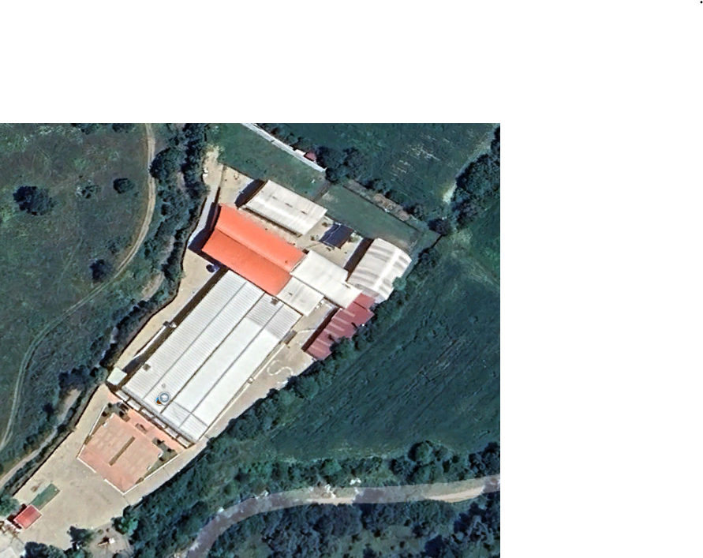

Küçük Canlılar
Böceklerin, kelebeklerin ve diğer küçük canlıların doğadaki görevlerini öğren.
Canlıları tanı →Doğanın içindeki küçük canlılardan çevremizdeki büyük güzelliklere kadar keşfedilecek çok şey var. Maral Koleji ile doğayı gözlemle, öğren ve korumaya katkıda bulun.
Çevremizi daha iyi tanımak için gözlem yapalım, sorular soralım ve öğrendiklerimizi paylaşalım.
Böceklerin, kelebeklerin ve diğer küçük canlıların doğadaki görevlerini öğren.
Canlıları tanı →Bitkilerin yaşamımızdaki önemini ve doğal yaşamı nasıl desteklediklerini keşfet.
Haritaya göz at →Su ve enerji kaynaklarını daha dikkatli kullanarak çevremize nasıl yardım edebileceğimizi öğren.
Önerileri gör →Fotoğrafın üzerindeki canlı isimlerine tıklayarak onlar hakkında bilgi edinebilirsin.

💡 İpucu: Canlı butonlarının yerleri örnek olarak ayarlanmıştır. Fotoğrafındaki canlıların konumlarına göre CSS içindeki left ve top değerlerini değiştirebilirsin.
Küçük canlılar ekosistemlerin önemli parçalarıdır. Onları tanımak doğayı korumaya yardımcı olur.
Güçlü arka bacaklarıyla sıçrayabilen çekirgeler, birçok kara ekosisteminde besin zincirinin parçasıdır.
Çekirgeyi keşfet →Ön bacaklarını avını yakalamak için kullanan bu böcekler, çevreleriyle uyum sağlayabilmeleriyle tanınır.
Peygamber devesini keşfet →Günlük alışkanlıklarımızı değiştirerek doğal kaynakları korumaya ve atıkları azaltmaya katkıda bulunabiliriz.
Su ayak izi, kullandığımız ürün ve hizmetlerle ilişkili doğrudan ve dolaylı su kullanımını anlamamıza yardımcı olur.
Enerjiyi dikkatli kullanmak kaynakların korunmasına ve gereksiz tüketimin azaltılmasına katkı sağlar.
Etrafına dikkatlice bak, canlıları gözlemle ve doğanın sana anlattıklarını keşfet. Unutma, doğayı korumak hepimizin işi.
Doğa haritasına dön ↑